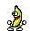

เชื่อไหมว่า คุณเองก็สามารถทำเฟอเรโร่ รอชเชอร์ (Ferrero Rocher) กินเองที่บ้านได้ ถึงจะไม่อร่อยเท่า แต่ก็ช่วยแก้ขัดได้ดีทีเดียว
เฟอเรโร่ รอชเชอร์ (Ferrero Rocher) ช็อกโกแลตที่ใครหลายคนมักจะเลือกซื้อเป็นของขวัญให้คนที่รัก แต่มีใครใจกล้าคิดจะทำกินเองบ้าง เพราะวันนี้กระปุกดอทคอมมีวิธีการทำ Ferrero Rocher สูตรโฮมเมดมาฝาก ไว้ลองทำกินเล่น ๆ ที่บ้าน หรือจะทำเป็นของขวัญของฝากก็ยังได้ครอยากรู้แล้วว่า จะทำเฟอเรโร่กินเองได้จริงหรือ ตามมาดูกันเลยจ้า

ส่วนผสม
ขนมเวเฟอร์ (ห่อเล็ก) 1 ห่อ
ช็อกโกแลตนูเทลล่า (Nutella)
ถั่วเฮเซลนัทอบสุก (เราซื้อแบบต้องเอาไปอบเอง แต่เราไม่มีเตาอบเลยคั่วกับกระทะแทนค่ะแล้วก็พอเอาลงก็ใช้ฝาปิดให้มันอบนิดนึง)
ดาร์กช็อกโกแลต
หมายเหตุ : ดาร์กช็อกโกแลตยี่ห้ออะไรก็ได้ค่ะ แต่เราเคยซื้อที Big C ยี่ห้ออะไรจำไม่ได้แล้ว เสียดายมากไม่ได้ถ่ายรูปไว้ นำเข้ามาจากฝรั่งเศส อันละประมาณ 90 กว่าบาท แล้วที่สำคัญเป็นดาร์กช็อกโกแลต 100% ค่ะ ชอบมาก ไม่มีน้ำตาลเลย แล้วเราเคยซื้อมาทำช็อกโกแลตฟัดจ์ (Chocolate Fudge) ใส่เฮเซลนัท แบบ Ritter Sport Dark Chocolate อร่อยมากกกกก ฟินสุด ๆ ใส่เฮเซลนัทสะใจเลย แต่ว่าตอนนี้ไปเดินหาไม่เจอแล้ว ไม่ว่าที่โลตัส ท็อปส์ หรือกรูเม่ ก็ไม่มีค่ะ เลยได้อันนี้มาแทน
วิธีทำ


นำเฮเซลนัทที่สุกแล้วมาปั่นหรือบดให้ละเอียด (เราไม่มีเครื่องค่ะ ใช้ใส่ถุงพลาสติกแล้วเอาสากมาตำ เฮเซลนัทที่ได้จึงหยาบไปหน่อย)


ใส่ช็อกโกแลตนูเทลล่าลงไปคนผสมให้เข้ากัน


นำเข้าแช่แข็งจนส่วนผสมเซ็ตตัว ประมาณ 2 ชั่วโมง


ละลายดาร์กช็อกโกแลต โดยหักดาร์กช็อกโกแลตเป็นชิ้น นำเข้าไมโครเวฟ (แต่เอาเข้าไม่นานนะคะแล้วเอาออกมาคนค่ะ ระวังถ้านานไปมันจะแข็งค่ะ)


นำส่วนผสมฮาเซลนัทออกมาปั้นเป็นก้อนกลม


นำไปคลุกกับเวเฟอร์บดให้ทั่ว


นำไปชุบกับดาร์กช็อกโกแลตที่ละลายไว้ให้ทั่ว เรียงใส่ภาชนะ

นำไปแช่เย็นจนเซ็ตตัว พร้อมรับประทาน (เสร็จแล้ว อีกวันมาทานกันค่ะ หน้าตาขี้เหร่มาก ข้างในไส้หนาไปหน่อย เพราะเฮเซลนัทที่หยาบไป)
ผลที่ได้ออกมา
1. รสชาติ : เหมือนกิน Ferrero Rocher จริง ๆ เลยค่ะ เพราะช็อกโกแลตนูเทลล่าเยอะแน่เลยผสมกับเฮเซลเนัท
2. ราคา : แพงค่ะ ไม่คุ้มเท่าไหร่ ซื้อของมา 400 บาททำได้แค่ 11 ลูกเอง (แต่ของบางอย่างก็เหลือนะคะ อย่างช็อกโกแลตนูเทลล่าเหลือ 1/2 กระปุก ถั่วเฮเซลนัทซื้อมา 2 กรัม เหลือ 0.5 กรัม (เอาไปทำ Chocolate Fudge ต่อ)
3. หน้าตา : ขี้เหร่มาก ที่จริงพอดูข้างในแล้วก็ยังไม่เหมือน Ferrero Rocher ของจริงเท่าไหร่ เพราะไม่มีชั้นเวเฟอร์กรอบ ๆ (เดี๋ยวไว้คราวหน้าจะลองทำให้เหมือนกว่านี้ค่ะ)
สำหรับเรายังไม่ชอบอ่ะค่ะ เพราะมันก็ยังหวานมากกอยู่ดี แต่ได้ความฟินจากเฮเซลนัทและช็อกโกแลตนูเทลล่าอาจจะเพราะเฮเซลนัทที่ไม่ละเอียดทำให้เราปั้นชั้นหนาไป มันเลยหวานแต่ที่นำมาให้ดู เผื่อใครอยากลองทำทานเองแล้วปรับสูตรได้ดีกว่าเรา นี่เป็นการโพสต์การทำขนมครั้งแรกนะคะ สามารถแนะนำติชมได้เลยค่ะ ขอบคุณค่ะ
ถึงแม้ Ferrero Rocher สูตรโฮมเมดนี้จะไม่ได้ดูดีเท่าของต้นตำรับ แต่ถ้าใครอยากทำเองคงต้องลองสักหน่อยแล้วล่ะ